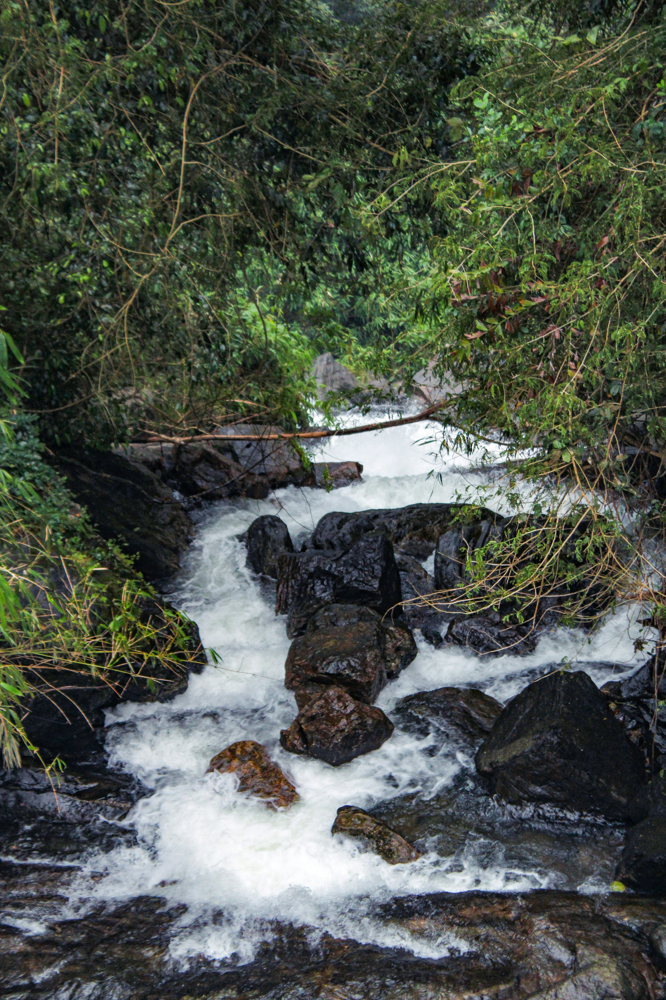
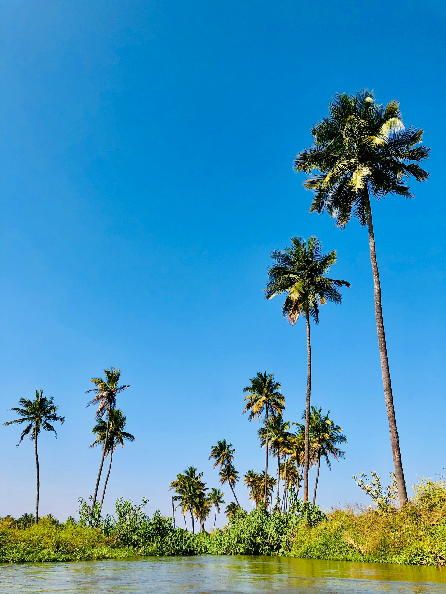
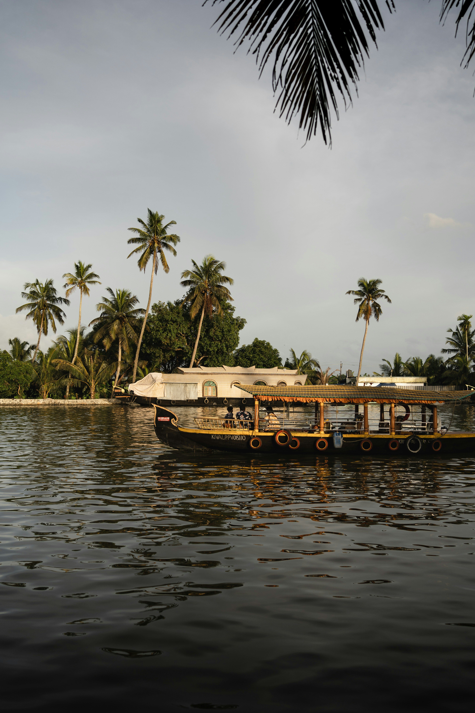

ROUTE
ROUTE← Back to tripsCHENNAI → THEKKADY
4 DAYS • 3 NIGHTS • KERALA
Thekkady Wildlife Escape
A forest-and-lake getaway around Periyar with spice-country experiences and relaxed road travel.
CHENNAI → THEKKADYTRIP GALLERY
Preview the route before you travel.
These are destination image slots. Replace the four SVG files with your real destination photographs when you are ready.
ROUTE
VIEWPOINT
STAY
EXPERIENCEROUND TRIP PLAN
A professional day-by-day travel chart.
Meal, restroom and room planning is included as a practical template. Exact hotel, meal stop, entry timing and activity availability should be confirmed before the journey.
DAY 01
Chennai → Thekkady
Long road journey • planned food/restroom breaks • Kumily check-in
🍽 Planned meal + restroom breaks🛏 Thekkady hotel — 1 night
DAY 02
Periyar & lake day
Periyar lake experience subject to availability • lunch • spice plantation / local experience
🍽 Planned meal + restroom breaks🛏 Thekkady hotel — 2nd night
DAY 03
Forest & local day
Flexible nature activity • Kumily market • relaxed resort evening
🍽 Planned meal + restroom breaks🛏 Thekkady hotel — 3rd night
DAY 04
Thekkady → Chennai
Breakfast • lunch + restroom stops • Chennai return
🍽 Planned meal + restroom breaks🛏 No room — return
HIGHLIGHTS
Build the route around your group.
Choose the vehicle size, pickup point and pace that works for your group. The sequence can be adjusted for weather, traffic and attraction timings.
✓ Periyar lake experience✓ Spice plantation✓ Forest-side sightseeing✓ Kumily market / local food
BOOKING NOTES
Make it your route.
- Choose a 12–25 seater vehicle based on group size.
- Add room category, meal preferences and extra stops to your request.
- Ask for a custom pickup, additional night or alternate route.
- Attraction access, weather, traffic and local restrictions can change the sequence.
REQUEST A CALLBACK
Want us to call you?
Send your name and phone number with your preferred date. The request opens a ready-to-send WhatsApp message for the RG booking team.
✓ Customer number included✓ Vehicle / route included✓ Preferred date included